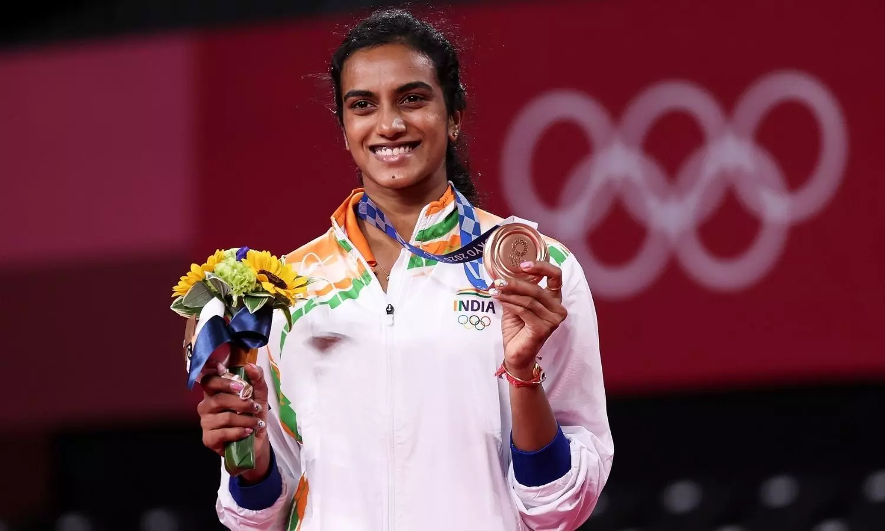
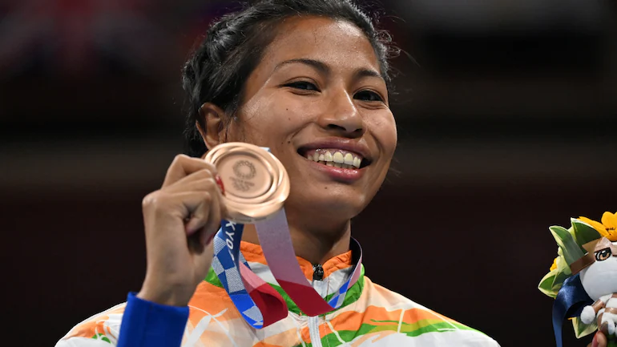
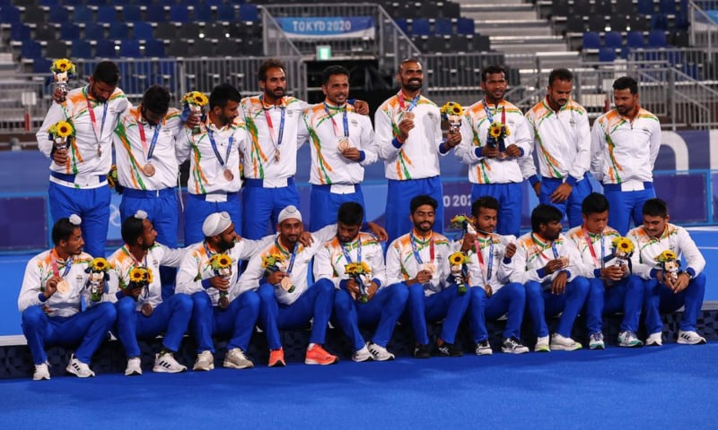

**********************************************************************************************************************************************************************
BRONZE MEDAL
**********************************************************************************************************************************************************************
PUSARLA VENKATA SINDHU
Click on image to know more..

Full Name: Pusarla Venkata Sindhu
Game:Women’s Singles Badminton
Country: India
Born: 5 July 1995 Andhra Pradesh, India(age 26)
Height 1.79 m (5 ft 10 in)
Weight 65 kg
**********************************************************************************************************************************************************************
LOVLINA BORGOHAIN
Click on image to know more..

Full Name: Lovlina Borgohain
Game:Welterweight
Country: India
Born: 2 October 1997 Assam, India(age 23)
Height 1.79 m (5 ft 10 in)
Weight 69 kg
**********************************************************************************************************************************************************************
Full Name:Bajrang Punia
Nationality:Indian
Game: Wrestler
Country:India
Born:Born 26 February 1994 Haryana, India(age 27)
Height: 1.66 m
Weight: 65 kg
**********************************************************************************************************************************************************************
HOCKEY TEAM
Click on image to know more..

Nickname: Men in Blue
Bharat Army
Association :
Hockey India (2008–present)
Indian Hockey Federation (1925–2008)
Confederation ASHF (Asia)
Coach: Graham Reid
Assistant coach: Gregg Clark
Piyush Dubey
Manager:Shivendra Singh
Captain :Manpreet Sing